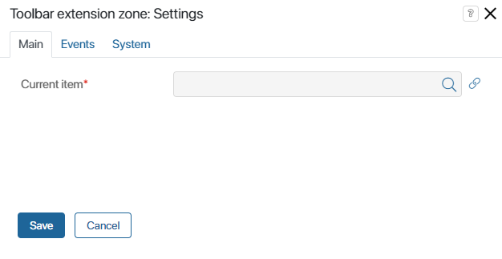
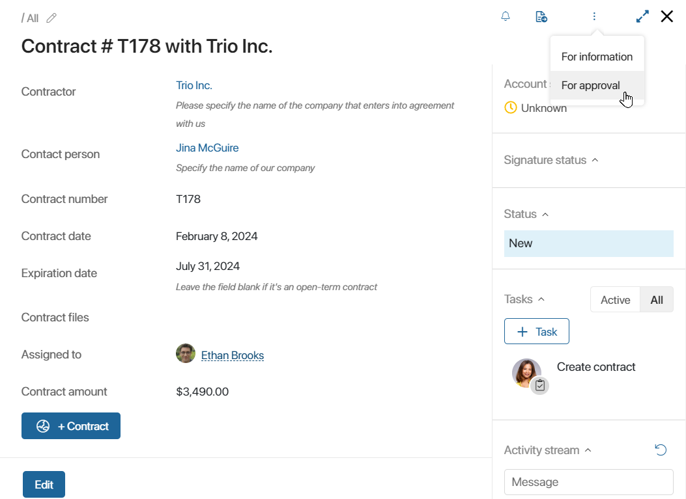

The widget is used to display custom widgets of the toolbar extension zone type. Such widgets are only created in modules and are used to implement new capabilities in the system. For example, you can use them to add buttons for interacting with external systems integrated with BRIX.
The Toolbar extension zone widget is placed by default:
- On the top panel of the app view form. Here the custom widget will be displayed if you select Toolbar extension zone group > Toolbar extension zone when creating it in the module. You can also manually add the Toolbar extension zone widget to the create and edit forms.
- On the top panel of the app page to the left of the gear, the custom widget will be displayed if you select App item list > Toolbar extension zone when creating it in the module.
Using widgets with the Toolbar extension zone type is convenient because when creating or editing the widget you do not need to manually add it to each form. These widgets are displayed in the Toolbar extension zone automatically. To hide unused widgets from the zone, disable the modules that they belong to.
Add a widget to the app form

In the Current item* field on the Main tab, click on , then click <Not defined> and select Link to the current item.
The Events and System tabs are for system settings that are the same for all the widgets. They allow you to configure widget visibility and access to its data, define what happens, when the user moves or hovers the pointer over the widget, etc. Find out more in System widget settings.
To complete the settings, click Save. To make the changes available to users, click Save and Publish in the top toolbar.
Delete the widget
To delete a widget from a form, select it, click the trash can icon, and confirm the action.
You can add the widget back to the form as described above.
Example
In this example, on the app item page in the Toolbar extension zone, there is a button with a drop-down menu.

Found a typo? Select it and press Ctrl+Enter to send us feedback